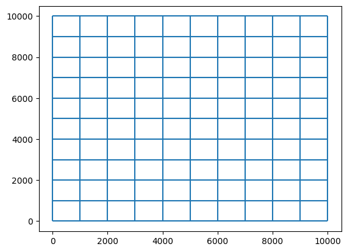
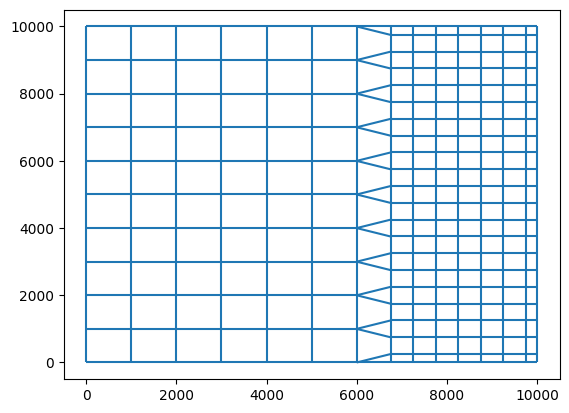
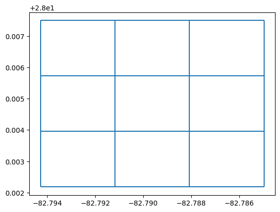
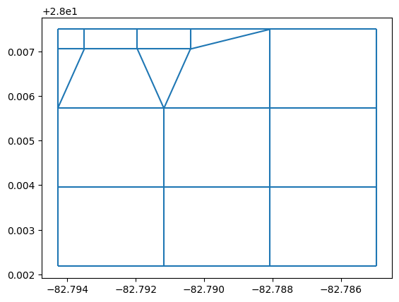

Mesh2d refine casulli based on depths
import matplotlib.pyplot as plt
from pathlib import Path
plt.close("all")
import xarray as xr
import numpy as np
import meshkernel
from meshkernel import (
MakeGridParameters,
MeshKernel,
GeometryList,
GriddedSamples,
ProjectionType,
MeshRefinementParameters,
RefinementType,
InterpolationType,
InterpolationParameters,
)
mk_version = meshkernel.__version__
Example 1: refine cartesian mesh
mk = MeshKernel(ProjectionType.CARTESIAN)
x_start, x_end = 0, 10000
y_min, y_max = 0, 10000
num_samples = 100
makeGridParameters = MakeGridParameters()
makeGridParameters.origin_x = x_start
makeGridParameters.origin_y = y_min
makeGridParameters.upper_right_x = x_end
makeGridParameters.upper_right_y = y_max
makeGridParameters.block_size_x = 1000
makeGridParameters.block_size_y = 1000
mk.mesh2d_make_rectangular_mesh_on_extension(makeGridParameters)
Plot starting cartesian mesh
mesh2d_not_refined = mk.mesh2d_get()
fig, ax = plt.subplots()
mesh2d_not_refined.plot_edges(ax)

x_grid, y_grid = np.meshgrid(
np.linspace(x_start, x_end, num_samples), np.linspace(y_min, y_max, num_samples)
)
values = np.array(np.interp(x_grid, [x_start, x_end], [-10.0, 5.0]), dtype=np.double)
Plot sample set
plt.figure(figsize=(8, 6))
plt.contourf(x_grid, y_grid, values, levels=50)
<matplotlib.contour.QuadContourSet at 0x1f054cec790>
samples = GeometryList(
x_coordinates=np.array(x_grid.flatten(), dtype=np.double),
y_coordinates=np.array(y_grid.flatten(), dtype=np.double),
values=np.array(values.flatten(), dtype=np.double),
)
interpolation_parameters = InterpolationParameters()
interpolation_parameters.interpolation_type = InterpolationType.AVERAGING
property_id = mk.mkernel_set_property(interpolation_parameters, samples)
x_coordinates_pol = np.empty(0, dtype=np.double)
y_coordinates_pol = np.empty(0, dtype=np.double)
polygons = GeometryList(
x_coordinates=x_coordinates_pol, y_coordinates=y_coordinates_pol
)
meshRefinementParameters = MeshRefinementParameters()
minimumRefinementDepth = 0.0
mk.mkernel_mesh2d_casulli_refinement_based_on_depths(
polygons, property_id, meshRefinementParameters, minimumRefinementDepth
)
Plot refined mesh (this must change)
mesh2d_refined = mk.mesh2d_get()
fig, ax = plt.subplots()
mesh2d_refined.plot_edges(ax)

Example 2: Refining the Analysis Using Real Bathymetric Data in a Smaller Region
Utility for reading samples
def read_and_filter_samples(file_path, lower_left, upper_right):
"""
Reads a text file of samples (lat, long, depth), filters samples within a bounding box,
and returns three numpy arrays of doubles (latitude, longitude, depth).
:param file_path: Path to the text file containing the data.
:param lower_left: Tuple with (latitude, longitude) of the lower-left corner of the bounding box.
:param upper_right: Tuple with (latitude, longitude) of the upper-right corner of the bounding box.
:return: Tuple of three numpy arrays: latitudes, longitudes, depths.
"""
latitudes = []
longitudes = []
depths = []
# Unpack bounding box corners
ll_lat, ll_long = lower_left
ur_lat, ur_long = upper_right
try:
with open(file_path, "r") as file:
for line in file:
# Parse the line into latitude, longitude, and depth
parts = line.strip().split("\t")
if len(parts) != 3:
continue
try:
lat, long, depth = map(float, parts)
except ValueError:
continue
# Check if the sample is within the bounding box
if ll_lat <= lat <= ur_lat and ll_long <= long <= ur_long:
latitudes.append(lat)
longitudes.append(long)
depths.append(depth)
except FileNotFoundError:
print(f"Error: File {file_path} not found.")
return (
np.array([], dtype=np.double),
np.array([], dtype=np.double),
np.array([], dtype=np.double),
)
except Exception as e:
print(f"An error occurred: {e}")
return (
np.array([], dtype=np.double),
np.array([], dtype=np.double),
np.array([], dtype=np.double),
)
# Convert lists to numpy arrays of type double
return (
np.array(latitudes, dtype=np.double),
np.array(longitudes, dtype=np.double),
np.array(depths, dtype=np.double),
)
input_file = "stpete.xyz"
input_file_path = Path().absolute() / "data_examples" / input_file
lower_left_corner = (-82.79428, 28.00218)
upper_right_corner = (-82.76323, 28.02404)
# Read and filter the samples
x_coordinates, y_coordinates, values = read_and_filter_samples(
input_file_path, lower_left_corner, upper_right_corner
)
Generate regular grid
lon_min, lon_max, lat_min, lat_max = -82.79428, -82.76323, 28.00218, 28.02404
dx = (lon_max - lon_min) / 10.0
dy = (lat_max - lat_min) / 10.0
makeGridParameters = MakeGridParameters(
angle=0,
origin_x=lon_min,
origin_y=lat_min,
upper_right_x=lon_max,
upper_right_y=lat_max,
block_size_x=dx,
block_size_y=dy,
)
mk = MeshKernel(projection=ProjectionType.SPHERICAL)
mk.mesh2d_make_rectangular_mesh(makeGridParameters)
mesh2d_not_refined = mk.mesh2d_get()
fig, ax = plt.subplots()
mesh2d_not_refined.plot_edges(ax)

samples = GeometryList(
x_coordinates=x_coordinates, y_coordinates=y_coordinates, values=values
)
interpolation_parameters = InterpolationParameters()
interpolation_parameters.interpolation_type = InterpolationType.AVERAGING
property_id = mk.mkernel_set_property(interpolation_parameters, samples)
x_coordinates_pol = np.empty(0, dtype=np.double)
y_coordinates_pol = np.empty(0, dtype=np.double)
polygons = GeometryList(
x_coordinates=x_coordinates_pol, y_coordinates=y_coordinates_pol
)
meshRefinementParameters = MeshRefinementParameters()
minimumRefinementDepth = 0.0
mk.mkernel_mesh2d_casulli_refinement_based_on_depths(
polygons, property_id, meshRefinementParameters, minimumRefinementDepth
)
mesh2d_refined = mk.mesh2d_get()
fig, ax = plt.subplots()
mesh2d_refined.plot_edges(ax)
